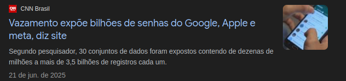
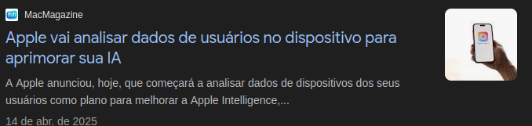
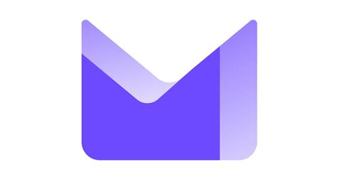
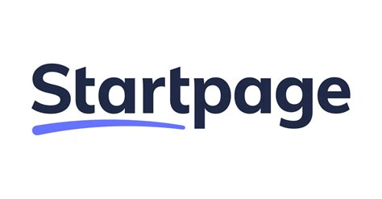

Aviso: Não faça isso se você não quiser, não te obrigo a nada.
Fugir das Big tech's
Big tech's são empresas de tecnologia que tem poder tanto político, econômico e cultural e um grande exemplo
de big tech são: Apple, Microsoft, Meta e Google.
E bem neste tópico irei te mostrar a como fugir dessas big tech's.
Por que fugir das big tech's?:
Bem antes de irmos saber de como fugir das big tech's é preciso entender do porque escapar das big tech's.
E bem o motivo é simples, essas empresas de tecnologia tem muito poder nas coisas, um exemplo disso é a Google
que tem poder da informação, a microsoft que tem poder um tanto que político por assim dizer, a apple tendo poder econômico e social
e a meta tendo poder um tanto que social, mas sabe... ter poder demais também pode ser um ponto negativo aos seus usuários
como por exemplo que a maioria das big tech's vendem seus dados para terceiros, se você não acredita em mim, aqui as provas abaixo.


Com essas imagens é o suficiente para pelo menos você entender os perigos do que eles podem fazer com seus dados
ou você acha que a shopee sabe o que você gosta e o que quer? Eu achava a mesma coisa, até ver a verdade.
Sistemas operacionais:
Bem começando pelos sistemas operacionais é o seguinte, só faça se quiser, não te obrigo a isso
mas se quiser escapar completamente das big tech's diga "adeus" ao Windows, diga "adeus" ao ChromeOS, diga "adeus" ao MacOS
e diga "olá" ao Linux.
E por que exatamente o Linux? Além de ser open-source (Código aberto) o Linux é livre e você tem liberdade para controlar
o sistema, além de que também o Linux é mais seguro que windows (Não é a toa que a taxa de ataques hackers contra Linux são baixas.)
Mas bem como sabemos o Linux não é um único sistema operacional, mas sim uma família de sistemas operacionais que as chamamos de
distros linux, e bem qual distro Linux você deve utilizar? Isso depende muito do seu hardware e conhecimento sobre Linux, abaixo estará
algumas opções boas para quem quer migrar pro Linux ou que quer fugir das big tech's.
Email:
Pois é, se caso você quer fugir das big tech's o Email também é uma brecha de vazamento de dados e coleta de dados
já que só com o seu email dá pra saber o site que você entrou, onde você mora e até mesmo de quem é você na internet.
Por isso que diga "adeus" ao outlook e ao gmail e diga "olá" aos email's anônimos.
O que são emails anônimos?:
Emails anônimos são emails que criptografam seus emails que você manda pra alguém além de não revelar seus rastros
diferente de emails normais, os emails anônimos nunca revelam onde você está, além de que também com um email anônimo
nenhum invasor irá conseguir ler seus emails que você quer mandar a alguém.
Minhas recomendações de Emails anônimos:

O ProtonMail é um email criado pela empresa Proton que é uma empresa Suíça focado no anonimato
e claro além de ser conhecida por conta do seu produto mais famoso, a ProtonVPN, mas tipo também
a Proton é muito conhecida por ser considerada a "Google do bem" por conta que a maioria de seus produtos
a google também possui só que a diferença da Proton com a Google é que Proton garante anonimato.

O Onionmail é um email anonimo que é conectado na rede tor, além de que também o lado bom dele
é que por mais que ele é muito conhecido na darknet, ele ainda é perfeito pra quem quer realmente fugir das big tech's.
Muito usado pra escapar de alguns sistemas, além de que em algumas empresas até utilizam o tutanota
para poder mandar emails de forma segura e esse é o lado bom do tutanota, segurança e privacidade.
Navegadores:
Outra coisa também que pode te ferrar bastante na mão das big tech's é o navegador, e sim se caso você usa google
saiba que eles sabem bastante coisas sobre você, se você dúvida então pesquise ai "My activity google" e você verá do que
eu estou te dizendo, mas bem se caso queira escapar disso diga "adeus" ao google, safari e até microsoft edge (Se é que usam ele.)
Minhas recomendações de navegadores:
O Firefox, todo mundo conhece ele, e bem a recomendação em relação a ele não é a toa
até porque como sabemos, ele é leve, anônimo e ainda por cima é open source.
Além de ser focado no anonimato e escapar de big tech's, o librewolf também é open source além de que
outro lado bom dele, é que ele já vem com o ublock instalado (Para quem não sabe, o ublock é uma extensão que
bloqueia anúncios.)
Não isso não é uma piada, o waterfox realmente existe e ele é bem semelhante ao firefox
só que mais leve do que parece, além de ter foco no anonimato e ser muito mais rápido.
Por que eu não citei o tor browser?:
O Tor mesmo que ele seja perfeito para anonimato, ele não é recomendável usar como navegador padrão já que
ele tenta o máximo possível se isolar do sistema, e bem além de que o Tor browser é bem lento devido ao anonimato
o que seria mais chato ainda durante o uso, e sim além de ser lento devido ao anonimato de onion routing até mesmo
a tor project diz que não é muito recomendável usar o tor browser como navegador padrão, ainda mais que ele também é
mais vulnerável para ataques cibernéticos como phishing, spyware, trojan e etc.
Mecanismos de busca:
Os mecanismos de busca são software's que vem junto ao navegador, um exemplo disso é que o
mecanismo de busca do chrome e o google, mas bem nos mecanismos de busca também existem boas opções
para anonimato e sem seus dados serem coletados.
Minhas recomendações de mecanismos de busca:

O startpage é um mecanismo de busca que é focado no anonimato, ele não é muito famoso
mas é uma boa opção para navegar na internet de forma segura e anonima.
O duckduckgo é muito conhecido pela sua navegação segura e claro pelo seu anonimato (Ele também é um navegador).
Gerenciador de senhas:
Pois é, se caso você tá fugindo das big tech's, terá que usar alguns gerenciadores de senhas mais seguros, então diga
"adeus" ao gerenciador de senhas do google e diga olá ao KeePassXC
E bem eu não irei apresentar outros Gerenciadores de senhas porque eu não conheço todos
mas pelo menos vou apresentar um que eu uso e conheço.
O lado bom de usar o KeePassXC é que ele além de proteger suas senhas bem, ele também recomenda senhas realmente fortes
e outra coisa boa também é que ele cria um arquivo que neste arquvo está guardado suas senhas
e que para você desbloquear o arquivo você precisaria de uma senha (Cujo essa senha você pode escolher e guarde bem ela porque
se caso você perde a senha ele não deixa você alterar a senha de novo.)
Software de armazenação na nuvem:
Pois é, nem isso se salva, mas bem diga "adeus" ao Google Drive e diga "olá" aos armazenamento na nuvem anônimos.
Minhas recomendações de software de armazenamento na nuvem:
O Protondrive é um dos produtos da empresa Proton (Que já foi explicada antes), que tem
como objetivo guardar de forma segura e com privacidade os seus arquivos na nuvem.
Não, isso não é o X twitter ou o que quer que você tenha imaginado, esse é o
internxt que é um software de armazenamento na nuvem anonimo que inclusive é muito recomendado
para pessoas que querem escapar das big tech's.
Lados positivos e negativos:
Lados positivos:
Você tem menos perigo de seus dados serem vazados ou coletados.
Você fica menos vulnerável a malwares (No Linux dificilmente você pega vírus.)
Você tem controle total sobre seus dados e seu sistema.
Lados negativos:
Nem tudo é open source, então você terá que usar outras opções de softwares (Exemplo:
usar o Gimp para substitur o photoshop.)
Você pode ter um desvio de aprendizado por conta que você utilizará um sistema complexo (Linux)
Alguns software's open source:
Photoshop -> Gimp
Whatsapp -> Whatsie
Explorador de arquivos -> Thunar
Paint -> Inkscape
Pacote office -> Libre Office
Capcut -> Kdenlive
Kaspersky antívirus - ClamAV
Adobe audition -> Audacity
Você que provavelmente foi migrar pro Linux recentemente
provavelmente não conhece alguns comandos do Linux certo?
Então visite o Tópico: #Terminal#
E lembrem-se, juntos contra as big tech's.